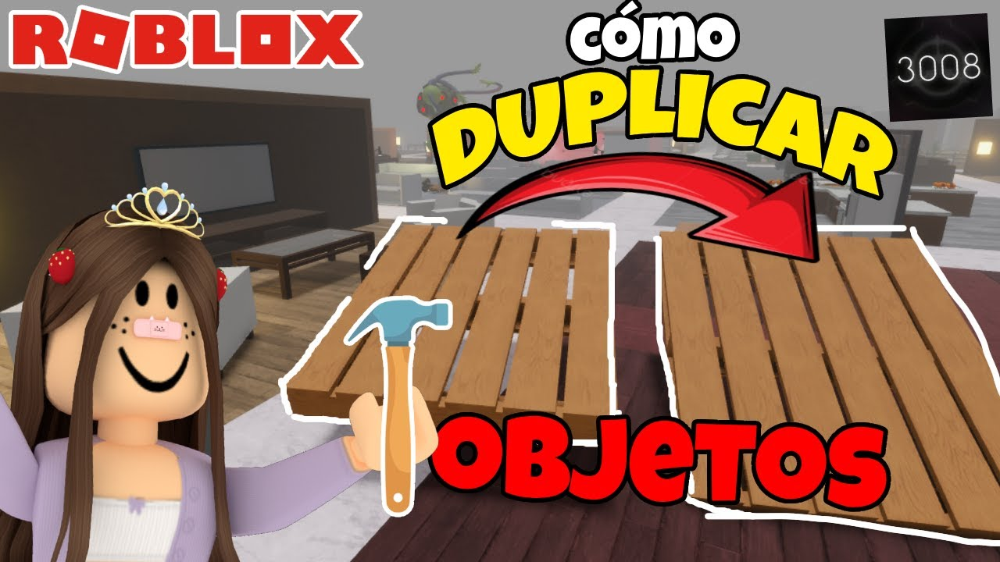
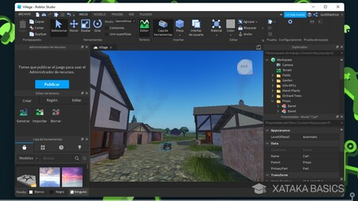
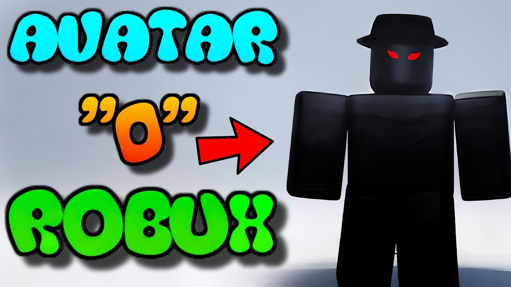
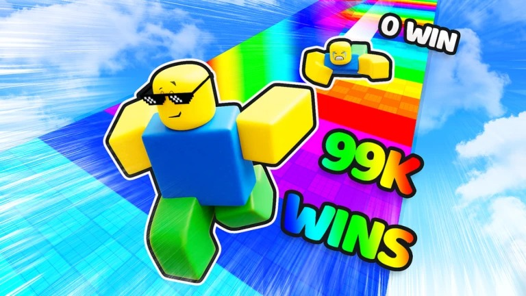
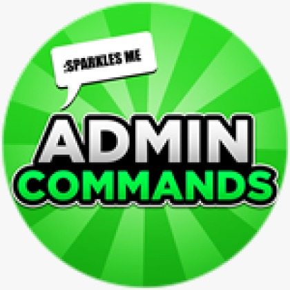
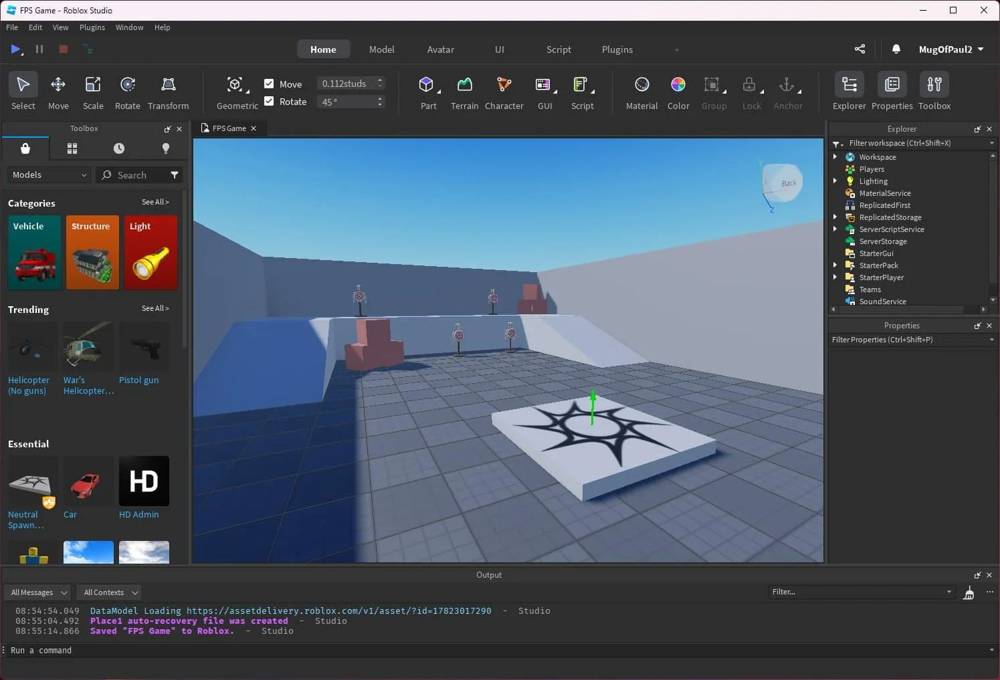
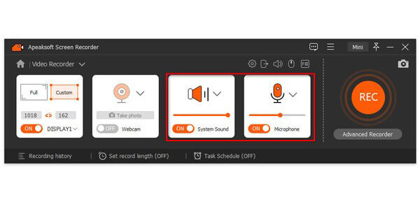

Cómo duplicar objetos en Roblox Studio
Fecha: 01 de April de 2025
Aprende a clonar elementos de forma rápida dentro de Roblox Studio para acelerar tus creaciones.
💡 TIP adicional: Usa los atajos Ctrl+D (Windows) o Cmd+D (Mac) para duplicar rápidamente. También puedes utilizar la opción “Duplicate” desde el menú contextual con clic derecho para mantener posiciones relativas exactas. Ideal para estructuras repetitivas como columnas, árboles o ítems decorativos.
📌 También puedes agrupar múltiples partes y duplicarlas como un conjunto para ahorrar tiempo. Usa el Explorador para organizar tus objetos y evitar errores al duplicar.
🛠️ Consejo experto: Usa carpetas (`Folder`) en el Explorer para organizar objetos duplicados y facilitar ediciones masivas sin errores.
Guía legal para conseguir Robux en eventos y promociones oficiales
Fecha: 31 de March de 2025
Conoce los métodos legítimos para obtener Robux sin gastar dinero.
💡 Información extra: Algunos eventos como los Bloxy Awards o colaboraciones con marcas (Nike, Spotify, etc.) ofrecen Robux o artículos exclusivos. Visita la página oficial de eventos de Roblox y revisa regularmente los avisos en el catálogo para no perder oportunidades.
📌 Recuerda verificar siempre que los eventos sean oficiales y no caigas en estafas de terceros. Roblox publica sus promociones en su blog oficial y redes verificadas.
🔍 Dato útil: Algunos juegos ofrecen códigos promocionales internos que puedes canjear en el menú principal. Revisa foros oficiales y Discords verificados.
Mejores plugins para construir mundos
Fecha: 30 de March de 2025
Herramientas esenciales para diseñadores dentro de Roblox Studio.
💡 Complemento recomendado: Prueba el plugin “Archimedes Two” para crear estructuras circulares o en espiral fácilmente, o “Model Resize” para escalar grupos de objetos de forma proporcional.
📌 Mantén tus plugins actualizados para asegurarte de que funcionen con las últimas versiones del Studio. Explora el Developer Forum para descubrir nuevas herramientas recomendadas por la comunidad.
📦 Extra: Revisa las reseñas de otros desarrolladores antes de instalar plugins nuevos. Algunos pueden causar errores si no están bien optimizados.
Personaliza tu avatar como un profesional
Fecha: 29 de March de 2025
Consejos para destacar con estilo único en Roblox.
💡 Sugerencia: Combina ropa gratuita del catálogo con accesorios poco comunes y prueba con escalado personalizado en el editor de avatar.
📌 No olvides revisar las combinaciones de colores y proporciones corporales. Ajustes como altura, ancho y proporción de cabeza pueden marcar una gran diferencia.
🎨 Detalle adicional: Los juegos con 'Try On' permiten visualizar combinaciones antes de comprarlas o aplicarlas. Úsalos para ahorrar tiempo.
Incrementar tu velocidad en juegos
Fecha: 28 de March de 2025
Descubre cómo usar mecánicas del juego para moverte más rápido legalmente.
💡 Truco: Algunos juegos permiten mejoras de velocidad al equipar ciertos ítems o al alcanzar logros; busca configuraciones en la tienda interna del juego.
📌 Algunos juegos permiten comprar mejoras temporales con monedas dentro del juego. Explora las tiendas internas y misiones especiales que otorgan boosts.
⚡ Extra tip: Algunos desarrolladores incluyen secretos escondidos que te otorgan velocidad al encontrarlos. ¡Explora bien el mapa!
Cómo obtener comandos de admin
Fecha: 27 de March de 2025
Aprende a tener privilegios especiales en servidores compatibles.
💡 Nota: Estos comandos solo funcionan en juegos donde el creador ha habilitado scripts de administración como HD Admin o Adonis.
📌 Una vez que tengas acceso, experimenta con comandos como ':fly', ':invisible' o ':size me 2'. Úsalos con responsabilidad para evitar sanciones.
🔧 Sugerencia avanzada: Puedes crear tus propios comandos usando scripts con RemoteEvents para personalizar aún más el control en tus juegos.
Creación de interfaces GUI
Fecha: 26 de March de 2025
Diseña menús y botones personalizados para tus juegos.
💡 Consejo: Usa `ScreenGui` y `TextButton` para comenzar, y prueba combinaciones con `TweenService` para animaciones suaves.
📌 Organiza tus elementos con `UIGridLayout` o `UIListLayout` para una apariencia más limpia. Considera la usabilidad para diferentes tamaños de pantalla.
🧩 Idea útil: Agrupa los elementos de UI con `Frame` para mantener jerarquía clara y modular en tus interfaces.
Scripts básicos de Roblox

Fecha: 25 de March de 2025
Domina los fundamentos básicos para empezar a programar en Roblox.
💡 Extra: Aprende estructuras como funciones, condicionales y bucles para automatizar interacciones dentro del juego.
📌 Familiarízate con el lenguaje Lua, utilizado en Roblox. Puedes comenzar con scripts que cambian el color de bloques al tocarlos.
🧠 Nivel siguiente: Empieza a probar con eventos como `Touched`, `Clicked`, o `KeyDown` para hacer tus juegos más dinámicos.
Cómo agregar sonidos personalizados
Fecha: 24 de March de 2025
Aprende a insertar música y efectos de sonido únicos en tu juego.
💡 Tip: Asegúrate de subir tus audios a Roblox como activos y copiar el Asset ID. Los puedes insertar con Sound o SoundService.
📌 Puedes usar `Sound:Play()` para ejecutar un sonido específico en un evento. Añadir sonido a botones mejora mucho la interacción del jugador.
🎵 Mejora avanzada: Usa bucles (`Looped = true`) para música de fondo y controla el volumen con sliders en UI.
Contacto
Si deseas ponerte en contacto con nosotros, envíanos un correo a contacto@streamfocus.lat.
Política de Privacidad
En StreamFocus respetamos tu privacidad. No compartimos tu información personal con terceros. Utilizamos cookies y tecnologías similares para mejorar tu experiencia de navegación, personalizar contenido y analizar nuestro tráfico. Puedes desactivar las cookies en la configuración de tu navegador, aunque algunas funciones del sitio podrían verse afectadas. No almacenamos datos sensibles y cumplimos con las leyes de protección de datos aplicables.
Aviso Legal
Todo el contenido publicado en StreamFocus es original, creado con fines informativos y educativos, y está protegido por derechos de autor. Roblox es una marca registrada de Roblox Corporation. No tenemos relación oficial ni directa con Roblox Corporation ni con los desarrolladores de los juegos mencionados. Cualquier marca, nombre de juego o imagen pertenece a sus respectivos propietarios.